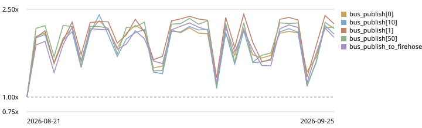
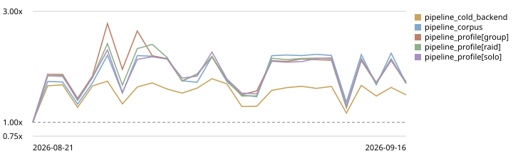
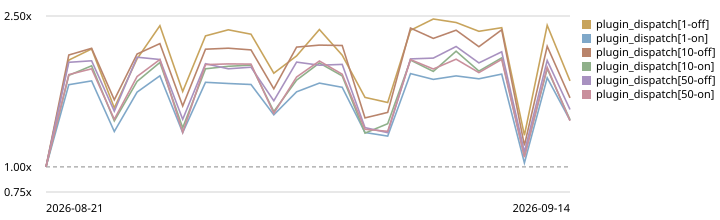
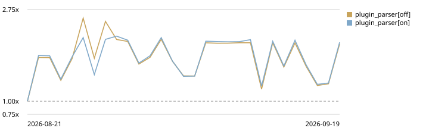
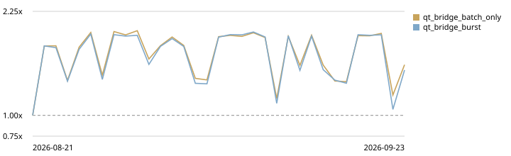
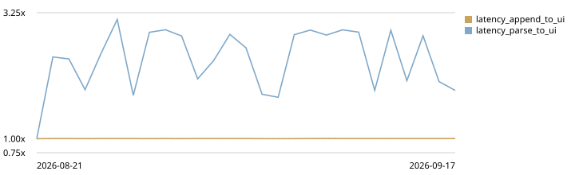

Performance¶
Generated page
Written by tools/perf_report.py render from the nightly
benchmark run (.github/workflows/performance-nightly.yml) and
redeployed to the dev docs version. Editing it by hand is
pointless — the next nightly overwrites it.
This is Phase 0 of #131: the measurement the later phases are supposed to be argued from. It is a dashboard, not a gate — nothing in CI fails because a number here moved, because hosted runners are shared VMs and a nightly that cried wolf would be muted inside a week. Read it for trends, not for single runs.
Latest run¶
- When: 2026-08-31T04:29:45.878582+00:00
- Commit:
f8bc4e8e5f3e(refs/heads/master) - Runner: ubuntu-latest, Python 3.12.3
- Recorded runs in history: 11
Percentages compare against the baseline recorded on ubuntu-latest (2026-08-21, d690d3e8acfa).
22 benchmark(s) more than 15% slower than baseline
test_bench_bus_publish[0](+84.2%)test_bench_bus_publish[10](+69.5%)test_bench_bus_publish[1](+92.3%)test_bench_bus_publish[50](+73.8%)test_bench_bus_publish_to_firehose(+81.8%)test_bench_latency_parse_to_ui(+106.8%)test_bench_map_location_burst(+76.2%)test_bench_pipeline_cold_backend(+52.6%)test_bench_pipeline_corpus(+74.9%)test_bench_pipeline_profile[group](+74.9%)test_bench_pipeline_profile[raid](+74.2%)test_bench_pipeline_profile[solo](+79.7%)test_bench_plugin_dispatch[1-off](+93.1%)test_bench_plugin_dispatch[1-on](+51.8%)test_bench_plugin_dispatch[10-off](+77.6%)test_bench_plugin_dispatch[10-on](+55.0%)test_bench_plugin_dispatch[50-off](+65.7%)test_bench_plugin_dispatch[50-on](+53.3%)test_bench_plugin_parser[off](+70.9%)test_bench_plugin_parser[on](+72.8%)test_bench_qt_bridge_batch_only(+67.7%)test_bench_qt_bridge_burst(+61.2%)
EventBus.publish¶
The floor under everything else. publish snapshots both subscriber lists defensively, which is the allocation #131 Phase 1 proposes to replace with copy-on-write — the 0-subscriber row is what that would be measured against.
| Benchmark | Mean | vs baseline | |
|---|---|---|---|
test_bench_bus_publish[0] |
250 ns | +84.2% | ⚠️ |
test_bench_bus_publish[10] |
898 ns | +69.5% | ⚠️ |
test_bench_bus_publish[1] |
350 ns | +92.3% | ⚠️ |
test_bench_bus_publish[50] |
3.28 µs | +73.8% | ⚠️ |
test_bench_bus_publish_to_firehose |
351 ns | +81.8% | ⚠️ |

Mean duration relative to the first recorded run; 1.00x is that run.
LogPipeline.process (full backend)¶
One replay of 60 in-game seconds of traffic through the parser chain and every handler subscribed to it. Divide by the line count in the table for per-line cost; the driver thread has 100 ms per poll to absorb whatever arrived in it.
| Benchmark | Mean | vs baseline | |
|---|---|---|---|
test_bench_pipeline_cold_backend |
236.38 ms | +52.6% | ⚠️ |
test_bench_pipeline_corpus |
3.51 ms | +74.9% | ⚠️ |
test_bench_pipeline_profile[group] |
23.05 ms | +74.9% | ⚠️ |
test_bench_pipeline_profile[raid] |
61.41 ms | +74.2% | ⚠️ |
test_bench_pipeline_profile[solo] |
9.08 ms | +79.7% | ⚠️ |
Per line: test_bench_pipeline_corpus: 93 lines, 37.76 µs/line; test_bench_pipeline_profile[group]: 440 lines, 52.39 µs/line; test_bench_pipeline_profile[raid]: 1264 lines, 48.58 µs/line; test_bench_pipeline_profile[solo]: 167 lines, 54.37 µs/line.

Mean duration relative to the first recorded run; 1.00x is that run.
Plugin subscriber dispatch¶
The same publish, but through HostPluginContext — so the per-plugin try/except guard and the telemetry gate are both inside the number. off and on are collection disabled and enabled: the gap is the entire cost of #132's measurement on the dispatch path.
| Benchmark | Mean | vs baseline | |
|---|---|---|---|
test_bench_plugin_dispatch[1-off] |
387 ns | +93.1% | ⚠️ |
test_bench_plugin_dispatch[1-on] |
901 ns | +51.8% | ⚠️ |
test_bench_plugin_dispatch[10-off] |
1.27 µs | +77.6% | ⚠️ |
test_bench_plugin_dispatch[10-on] |
5.30 µs | +55.0% | ⚠️ |
test_bench_plugin_dispatch[50-off] |
5.36 µs | +65.7% | ⚠️ |
test_bench_plugin_dispatch[50-on] |
24.40 µs | +53.3% | ⚠️ |

Mean duration relative to the first recorded run; 1.00x is that run.
Plugin parser in the chain¶
A plugin parser appended after the built-in chain, over a raid burst. It never consumes a line, which is the worst case: every line reaches it.
| Benchmark | Mean | vs baseline | |
|---|---|---|---|
test_bench_plugin_parser[off] |
30.95 ms | +70.9% | ⚠️ |
test_bench_plugin_parser[on] |
30.94 ms | +72.8% | ⚠️ |
Per line: test_bench_plugin_parser[off]: 633 lines, 48.89 µs/line; test_bench_plugin_parser[on]: 633 lines, 48.88 µs/line.

Mean duration relative to the first recorded run; 1.00x is that run.
Qt bridge (buffer + coalesced flush)¶
1000 events published from a worker thread and delivered in one coalesced GUI-thread flush. burst has a per-event slot connected, batch_only just the bulk signal.
| Benchmark | Mean | vs baseline | |
|---|---|---|---|
test_bench_qt_bridge_batch_only |
2.00 ms | +67.7% | ⚠️ |
test_bench_qt_bridge_burst |
2.34 ms | +61.2% | ⚠️ |

Mean duration relative to the first recorded run; 1.00x is that run.
Map canvas render¶
The heaviest widget in the app, coalescing 120 location fixes into one render.
| Benchmark | Mean | vs baseline | |
|---|---|---|---|
test_bench_map_location_burst |
778.35 µs | +76.2% | ⚠️ |
Mean duration relative to the first recorded run; 1.00x is that run.
End-to-end latency (log append -> UI slot)¶
A real LogDriver tailing a real file, so this includes the 100 ms poll interval it is dominated by. That is the honest end-to-end figure — it is what the user waits.
| Benchmark | Mean | vs baseline | |
|---|---|---|---|
test_bench_latency_append_to_ui |
100.61 ms | +0.3% | |
test_bench_latency_parse_to_ui |
183.19 µs | +106.8% | ⚠️ |

Mean duration relative to the first recorded run; 1.00x is that run.
Running it yourself¶
QT_QPA_PLATFORM=offscreen uv run pytest -m benchmark --benchmark-only
Benchmarks are excluded from the default uv run pytest (see the
addopts in pyproject.toml) because timing assertions in CI are noise.
The fixtures they replay are in tests/perf/profiles.py: solo, group and
raid traffic composed from the EQtoolsTests line corpus.